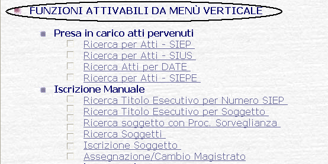

Menu Verticale:nell'Area di Navigazione è sempre presente e disponibile per l'utente il Menu Verticale il quale è composto da bottoni che permettono di richiamare le funzioni corrispondenti.
LE MASCHERE VIDEO
Il Menu Verticale è presente nell'Area di Navigazione :
COME FARE PER ...
Per eseguire una delle funzioni riportate nella descrizione sui bottoni occorre selezionarle tramite mouse cliccando sul bottone corrispondente.
Alcune funzioni apriranno, direttamente nell'Area Operativa, la maschera della funzione prescelta, mentre altre funzioni apriranno dei Menu che contengono a loro volta delle funzioni relative all'argomento della funzione prescelta.
In particolare le funzioni eseguibili sono quelle riportate nell'Indice Sius nella sezione "FUNZIONI ATTIVABILI DA MENÙ VERTICALE"

dove in corrispondenza dei target:
| sono presenti le voci corrispondenti alla voce presente nei bottoni del Menu Verticale; |
| sono presenti le funzioni eseguibili associate alla voce presente nei bottoni del Menu Verticale. |
Da notare che gli asterischi (*) sono presenti per evidenziare che:
* La Funzione è disponibile solo per gli Amministratori di UFFICIO
** La Funzione è disponibile solo per gi Amministratori di DISTRETTO